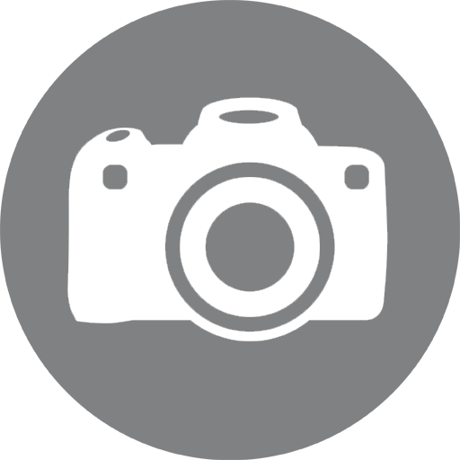
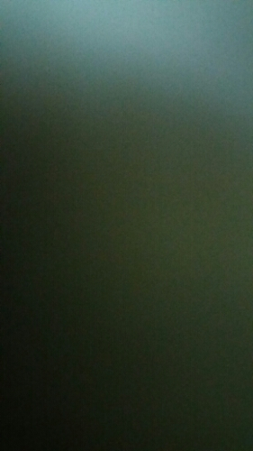

<!--
  Generated template for the TakeimgPage page.

  See http://ionicframework.com/docs/components/#navigation for more info on
  Ionic pages and navigation.
-->
<!-- <ion-header>

  <ion-navbar>
    <ion-title>takeimg</ion-title>
  </ion-navbar>

</ion-header> -->


<ion-content padding>

  <div class="cmdaapetit" (click)="capture()" *ngIf="captureDataUrl">
      <ion-icon name="ios-camera-outline"></ion-icon>
  </div>
  <div class="cmare" (click)="capture()"  *ngIf="!captureDataUrl">
      
      <!--  -->
  </div>
  <!-- <button ion-button (click)="capture()" *ngIf="!captureDataUrl">Lets take a picture!</button> -->
  <!--  -->
  

  <!-- <div class="block_cu" *ngIf="captureDataUrl">
    <div class="box12 box_cu">
      <div class="box_labl">Pb</div>
      <div class="box_value">24,54%</div>
    </div>
    <div class="box12 box_zn">
      <div class="box_labl">Zn</div>
      <div class="box_value">20.11%</div>
    </div>
    <div class="box12 box_pb">
      <div class="box_labl">Cu</div>
      <div class="box_value">15.6%</div>
    </div>
  </div> -->

  <div class="block_cu" *ngIf="captureDataUrl">
    <div class="box12 box_cu">
      <div class="box_labl">Pb</div>
      <div class="box_value">{{doc.pb}}%</div>
    </div>
    <div class="box12 box_zn">
      <div class="box_labl">Zn</div>
      <div class="box_value">{{doc.zn}}%</div>
    </div>
    <div class="box12 box_pb">
      <div class="box_labl">Cu</div>
      <div class="box_value">{{doc.cu}}%</div>
    </div>
  </div>

</ion-content>
